Op die oomblik sit jy by ’n lessenaar op ’n stoel. Binnekort gaan jy dinge in ’n boek skryf met ’n pen of ’n potlood. Die boek rus op jou lessenaar. Al hierdie voorwerpe word “strukture” genoem. As in jy in die klaskamer rondkyk sal jy baie ander strukture sien. Byvoorbeeld, die klaskamer en skoolgebou is strukture.
In hierdie hoofstuk gaan jy leer oor natuurlike en mensgemaakte strukture. Jy sal ook leer oor dopstrukture, soliede strukture en raamstrukture.
8.1 Voorwerpe wat strukture genoem word 114
8.2 Mensgemaakte en natuurlike strukture 119
8.3 Struktuurtipes 123


Figuur 1
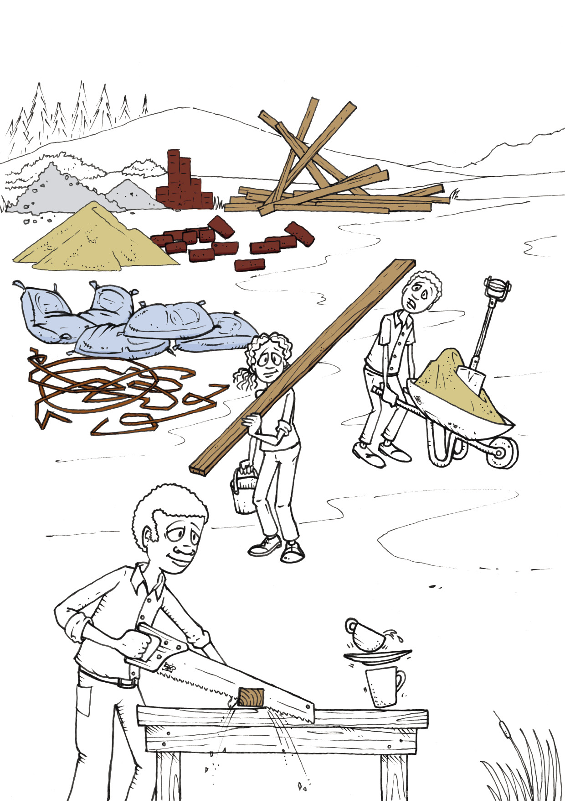
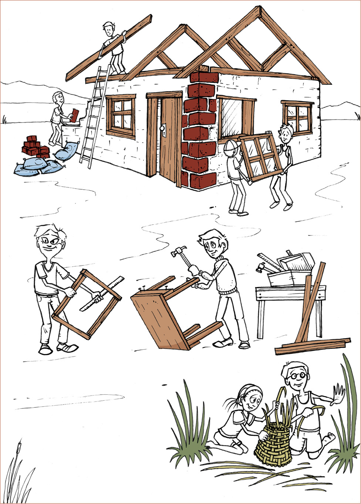
8.1 Voorwerpe wat strukture genoem word
Kyk rond in die klaskamer. Kies enige voorwerp, byvoorbeeld ’n kas, ’n tafel, ’n stoel, ’n mandjie, ’n bottel, ’n skoen, ’n potloodkissie of ’n baksteen. Beantwoord dan die volgende vrae oor die voorwerp wat jy gekies het.
1. Wat word die voorwerp genoem?
2. Waarvoor word dit gebruik?
3. Kan dit gebruik word om spesifieke dinge bymekaar te hou sodat hulle nie in die klaskamer rondlê nie?
4. Kan die voorwerp gebruik word om iets te beskerm, byvoorbeeld teen sonlig of wind?
5. Word dit gebruik om iets te ondersteun?

Figuur 4: Die stoel ondersteun die persoon wat daarop sit.
Hierdie man sit gemaklik op die stoel. Jy kan sê dat die stoel die man ondersteun en keer dat hy afval.
6. Beskryf ander voorwerpe wat van stoele verskil, maar gebruik word om iets of iemand te ondersteun.
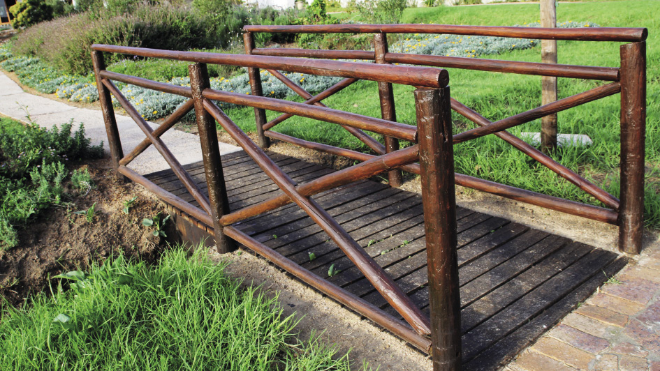
Figuur 5: Die brug oorspan die rivier.
’n Brug oor ’n rivier, wat van een oewer na die ander een gaan, help mense om die stroom oor te steek sonder om nat te word. Die brug oorspan die rivier.

Situasie: ’n Spazawinkel
Veronderstel jy wil ’n stalletjie by ’n mark oprig om kos soos suiker, meel, mielies, rys, eiers, bone en kookolie te verkoop. Voordat jy dit kan doen, moet jy eers groot houers suiker, meel, mielies, rys, eiers en bone, asook ’n 20-liter drom kookolie koop.
Figuur 6
1. Maak ’n lys van die voorwerpe wat jy in hierdie prent kan sien.
2. Wat anders het jy nodig om jou stalletjie op te rig voordat jy kan begin om die produkte te verkoop?
3. In watter soort houer sal die eiers wat jy verkoop, gehou word?
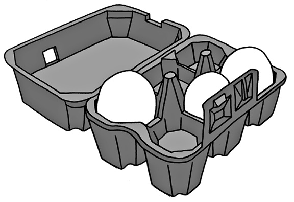Figuur 7
4. Hoekom word eiers in spesiale houers verpak, soos die een wat jy op die prent sien?
5. Wat het jy nog nodig om die twee leë kratte te gebruik om ’n tydelike tafel te maak?
6. Veronderstel ’n vrou wil 2 kg meel by jou koop. Sal jy haar vra om haar hande uit te steek sodat jy die meel in haar hande kan sit, of sal jy ’n ander plan maak?
7. Wat sal jy as houers gebruik as jy mielies, rys en meel aan mense verkoop?
’n Houer is iets wat jy gebruik om dinge in een plek bymekaar te hou, soos ’n papiersak vir rys.
8. Wat sal jy as houer gebruik as jy olie verkoop?
9. Toe jy vraag 5 hierbo beantwoord het, wat het jy besluit gaan jy gebruik om die twee kratte te oorspan om ’n tafel te vorm?
Die tafel wat jy gaan maak, die kratte waarmee jy die tafel maak, die houers waarin jy die eiers kry en die plastiekbottels waarin jy die olie verkoop, word strukture genoem.
10. Hoe sal jy jouself en die goedere wat jy verkoop teen reën beskerm? Teken die struktuur wat jy as beskerming teen reën sal gebruik.
|
|
Mense ontwerp en maak strukture om verskillende redes. Baie strukture kan jou help om een of meer van die dinge wat hieronder genoem word te doen.
|
Om dinge binne en bymekaar te hou, sodat dit nie kan rondlê of uitval of uitvloei nie, en om dit afsonderlik van ander produkte te hou. Om iets te beskerm, sodat dit nie beskadig word nie. Om iets te ondersteun en regop te hou. Om die ruimte tussen twee voorwerpe te oorspan sodat hulle verbind word. |
11. Kan jy aan ’n struktuur dink wat meer as een van hierdie dinge kan doen?

8.2 Mensgemaakte en natuurlike strukture

Figuur 8: ’n Rysmierhoop
Het jy al ooit van naby na ’n rysmierhoop gekyk? Dit is werklik wonderlik hoe dit die rysmiere en hulle kos teen die weer en hul vyande beskerm. Binne so ’n miershoop is daar ’n hele stad!
Die materiaal (grond) word deur hulle verwerk om kompak te word sodat dit skokke kan weerstaan, terwyl die miershoop se vorm reën toelaat om maklik af te loop. Dit is ’n voorbeeld van ’n natuurlike struktuur. Dit is nie mensgemaak nie.
Mensgemaakte skuilings het dieselfde funksies: om mense en hulle eiendom te beskerm. Voor die bestaan van mensgemaakte skuilings soos huise en tente het mense bome en grotte vir beskerming gebruik.
Om ons is daar baie verskillende strukture. Party is deur mense gebou en ander is reeds in die natuur teenwoordig. Die rysmierhoop is ’n struktuur, maar is nie deur mense gebou nie. Sulke strukture noem ons “natuurlike strukture”.
’n Koppie waaruit jy tee of koffie drink is ook ’n struktuur. Dit is ’n “mensgemaakte struktuur” omdat die koppie deur mense gemaak is.
Kyk na die strukture op die volgende twee bladsye en klassifiseer hulle as mensgemaakte strukture of natuurlike strukture.

(c)
(a)
(e)
(f)
d)
(b)


(c)
(a)
(e)
(b)
(d)
(f)
Klassifiseer strukture
1. Klassifiseer die 12 strukture op die vorige twee bladsye as mensgemaakte of natuurlike strukture.
|
Mensgemaakte strukture |
Natuurlike strukture |
|
|
|
|
|
|
|
|
|
|
|
|
|
|
|
|
|
|
|
|
|
|
|
|
2. Aan watter ander natuurlike strukture kan jy dink?
3. Noem enige drie mensgemaakte strukture wat beskerming bied.
4. Noem enige drie mensegemaakte strukture wat ondersteuning bied.
5. Noem enige drie mensgemaakte strukture waarin dinge gehou kan word.

8.3 Verskillende soorte strukture
Daar is drie basiese soorte strukture: dopstrukture, raamstrukture en
soliede strukture. Daar is ook sommige strukture wat gemeng is.
Dopstrukture
Die meeste houers wat gebruik word om vloeistowwe of klein stukkies vaste stowwe in te hou is dopstrukture. Voorbeelde hiervan is koffiebekers, bakkies vir grondbone, en sakke vir rys of suiker.
Die sterkte van ’n dop struktuur is aan die buitekant daarvan – in die dop.
Hoendereiers en leë volstruiseierdoppe is voorbeelde van “natuurlike dopstrukture”. Sokkerballe en ballonne is mensgemaakte strukture.
Figuur 11: Die San het volstruiseierdoppe as waterhouers gebruik.

Figuur 12: Bye bewaar hul heuning in heuningkoeke.
Figuur 13: ’n Rubberbuiteband is ’n dopstruktuur.
Figuur 14: ’n Koffiebeker is ’n dopstruktuur.
Raamstrukture
’n Raamstruktuur bestaan uit verskillende onderdele. Hierdie onderdele word op so ’n manier saamgevoeg dat hulle die struktuur sterk maak. ’n Leer en ’n fiets is goeie voorbeelde van mensgemaakte raamstrukture. Spinnerakke is natuurlike raamstrukture.
Figuur 15: Hierdie dakstruktuur van houtplanke is ’n raamstruktuur wat uit natuurlike materiaal gemaak is. Die planke ondersteun die dak.

Figuur 16: ’n Fietsraam bestaan uit verskillende metaalpype.

Figuur 17: ’n Blaar van ’n plant. Kyk na die are – hulle vorm die raamwerk van die blaar.

Soliede strukture
Strukture soos rotse, bakstene en sementpale is solied. Hulle bestaan nie uit verskillende dele met oop spasies tussen hulle nie. ’n Klip is ’n natuurlike soliede struktuur en is een stuk materiaal. ’n Baksteen is ’n mensgemaakte soliede struktuur en is ’n soliede struktuur.

Figuur 18: Klippe
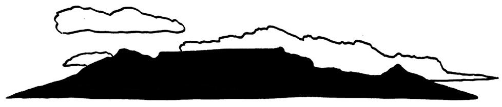
Figuur 19: Tafelberg

Figuur 20: ’n Sementsteen

Figuur 21: ’n Teelepel
Saamgevoegde strukture
’n Huis is ’n goeie voorbeeld van ’n struktuur wat saamgevoeg is uit dop-, raam- en soliede strukture.
- • Die bakstene, dakteëls of dakplate is almal soliede strukture.
- • Die verskillende kamers van die huis is ’n dopstruktuur.
- • Die raamwerk waarop die dakteëls of dakplate lê, word die dakkappe genoem, en is raamstrukture.
Identifiseer struktuurtipes
1. Klassifiseer die strukture wat in die tabel hieronder genoem word as dopstrukture, raamstrukture of soliede strukture:
’n huis, ’n elektrisiteitstoring, ’n skilpaddop, ’n selfoontoring, ’n menslike skedel, ’n baksteen, ’n tuinstoel, ’n spinnerak en ’n hondehok, houtstompe, hoendereiers en rotse. Jy kan op die vorige bladsye na prente van hierdie strukture kyk.
2. Skryf meer voorbeelde van elk van die verskillende struktuursoorte in die tabel neer.
|
Dopstruktuur |
Raamstruktuur |
Soliede struktuur |
|
|
|
|
|
|
|
|
|
|
|
|
|
|
|
|
|
|
|
|
|
|
|
|
|
|
|
|
|
|
|
|
|
|
|
|
|
|
|
|

Ondersteuning vir watertenks
Figuur 22: ’n Watertenk op ’n soliede baksteenvoetstuk
Figuur 23: ’n Watertenk op ’n metaalraamwerk as voetstuk
1. Noem al die strukture wat jy in die prente hierbo sien. Sê in elke geval watter soort struktuur dit is en wat die doel daarvan is.
2 Vergelyk die twee watertenks se ondersteunende strukture.
(a) Watter voetstuk is ’n soliede struktuur en watter een ’n raamstruktuur?
(b) Watter een van die voetstukke dink jy is die sterkste van die twee? Verduidelik waarom jy so dink.
3. Maak ’n vryhandskets van die metaalraamvoetstuk en die tenk:
|
|

Volgende week
In die volgende hoofstuk gaan jy leer oor verskillende maniere om raamstrukture te versterk.
In hierdie hoofstuk gaan jy kyk na raamstrukture, soos selfoon torings, windpompe, kragdraad torings en mynskag torings. Jy sal leer hoe hierdie strukture ontwerp en gebou word sodat hulle sterk genoeg is, en jy gaan uitvind hoe die materiale wat in die bouprosesse van hierdie strukture gebruik word versterk kan word. Jy sal ook die voor- en nadele van landlyn telefone en selfone ondersoek.
9.1 Sterk raamstrukture 132
9.2 Kommunikasiestelsels 137
9.3 Aksienavorsing: versterking van strukture 139
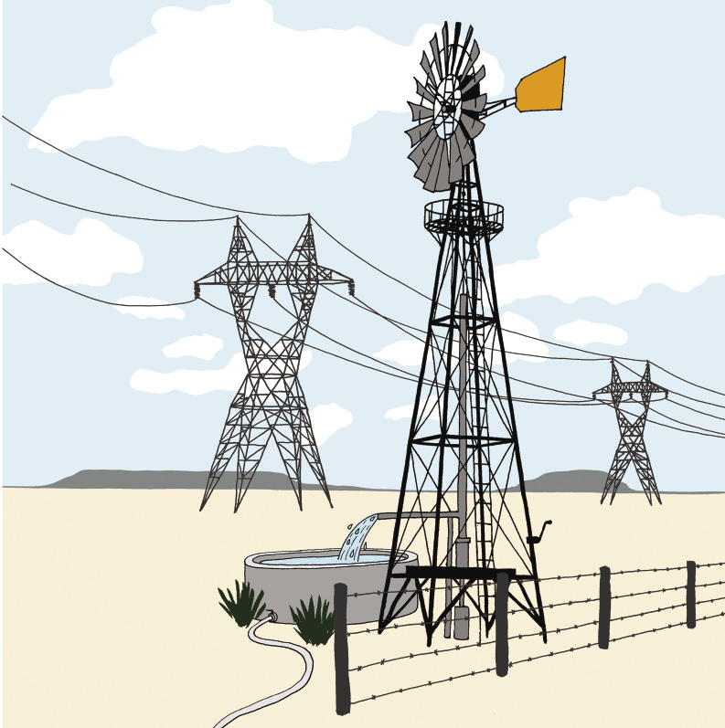
Figuur 1
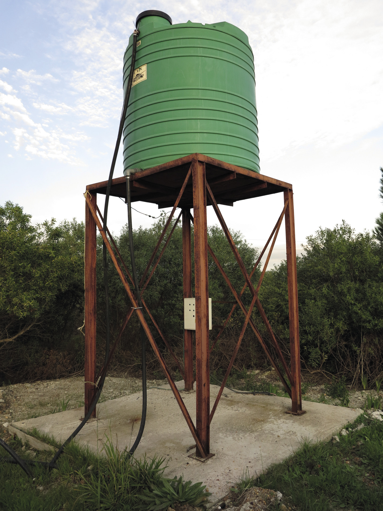Figuur 2
Figuur 3
9.1 Sterk raamstrukture
Figuur 4: ’n Selfoontoring
Figuur 5: ’n Windpomp
As die wind waai sodat die wiel van ’n windpomp draai, word water uit ’n boorgat gepomp. Op hierdie manier word wind as ’n energiebron gebruik. Wind kan op dieselfde manier gebruik word om elektrisiteit op te wek. Baie jare gelede, voor elektrisiteit ontdek is, het mense windmeule gebruik om graan te maal om meel te maak.
’n Selfoontoring is ’n hoë raamstruktuur met toestelle bekend as golfontvangers en golfsenders bo-op. Wanneer mense met mekaar praat deur selfone te gebruik, laat die ontvangers en die senders die golwe van een selfoon ’n ander selfoon bereik.

Figuur 6
1. Trek lyne op die diagram aan die linkerkant hier onder sodat dit meer na die toring van ’n windpomp of ’n selfoontoring lyk. Moenie ’n liniaal gebruik nie. Maak ’n vinnige vryhandskets.
 Figuur 7
Figuur 7
2. Waarom dink jy is die toring van die windpomp en die selfoontoring ontwerp soos in jou tekening links, en nie soos die tekening aan die regterkant nie?
Ondersoek nog torings
Figuur 8: ’n Elektrisiteitstoring

Figuur 9: ’n Mynskagtoring
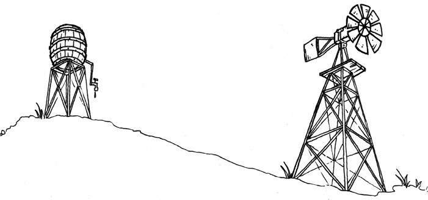
Figuur 11
1. Kyk na die prente en foto’s wat tot dusver in hierdie hoofstuk verskyn het. Hulle is almal van raamwerktorings. Lyk hierdie torings meer soos ontwerp A hieronder, of meer soos ontwerp B?
design A
design B
Figuur 12
2. Trek donker lyne op die sye van ’n driehoek in ontwerp A in. Is daar enige driehoeke in ontwerp B? Hoeveel driehoeke is daar in ontwerp A?
3. Hoekom dink jy is daar driehoeke in die torings?

9.2 Kommunikasiestelsels
Landlyntelefone of selfone: wat is die beste?
Party mense sê dit is beter om ’n selfoon te gebruik as ’n landlyn telefoon. Ander verkies weer landlyn telefone bo selfone.
’n Ander naam vir ’n selfoon is ’n mobiele telefoon.

Figuur 13
1. Waarom hoor Mavis nie wat Thomas sê nie?
2. Phillip en Lebogang geniet hulle gesprek. Hoekom ondervind hulle nie dieselfde kommunikasieprobleem as Mavis en Thomas nie?
3. Gebruik die onderstaande tabel en beskryf vier voordele van landlyn telefone, en vier voordele van selfone.
|
Toestel |
Voordele |
Nadele |
|
Landlyntelefone
|
|
|
|
Selfone
|
|
|
9.3 Aksienavorsing: Verstewiging van strukture
Sommige soorte materiaal is nie geskik as boumateriaal nie. Hulle eienskappe kan egter verander en verbeter word om ’n geskikte materiaal te maak. Jy gaan nou ’n plat vel papier verstewig om dit meer geskik te maak as boumateriaal vir modelle.
Verstewig: Om iets stewig en sterk te maak.
Aktiwiteit 1: Verstewig papier deur verbuising
Werk in pare.
Julle benodig:
- • twee velle A4-papier (verkieslik afvalpapier wat vir herwinning sou gaan),
- • maskeerband of kleefband,
- • gom, en
- • ’n skêr.
Kyk na die prente hieronder voordat julle begin.
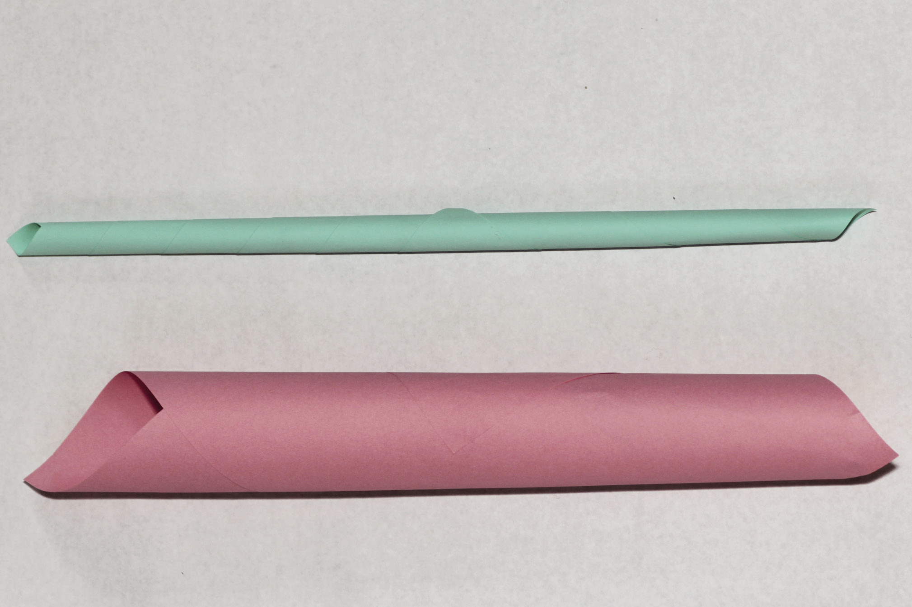
Figuur 14
Leerder 1: Rol ’n papiervel om ’n buis te vorm met ’n gat in die middel wat nie groter is as die gat in die middel van ’n toiletrol nie. Plak die buis met kleefband vas sodat dit sy vorm behou.
Leerder 2: Rol ’n papiervel op om ’n kleiner buis te vorm met ’n gat in die middel waarin ’n potlood net-net nie pas nie. Plak die buis met kleefband vas sodat dit sy vorm behou.
Hou die buise aan hul eindpunte vas. Probeer om elke buis te buig. Watter een buig die maklikste?
Verbuising is ook die proses wat gebruik word wanneer sterk papierstrooitjies vervaardig word. Kyk na die prent hieronder om te sien hoe om papierstrooitjies te rol.
Plak die laaste stukkie van die papiervel vas om te keer dat die strooitjie afrol.
Knip die dun eindpunte van die
gerolde strooitjie af. Nou het jy ’n sterk
papierstrooitjie.
Tuisgemaakte gom
Bestanddele
1 koppie koekmeel
½ koppie suiker
1 ½ koppies water
1 eetlepel asyn
Metode
Meng die meel en suiker in ’n pot.
Voeg die helfte van die water by en roer.
Voeg die res van die water by en roer.
Voeg die asyn by.
Verhit dit totdat die mengsel dik en blinkerig word. Laat dit afkoel.
stap 1
stap 3
stap 2
stap 4
Figuur 15

Aktiwiteit 2: Verstewig karton deur voue daarin te maak
Werk in pare. Julle benodig ’n stuk karton, kleefband en ’n skêr.
Julle het ook twee boeke nodig. Knip twee kartonstroke, elkeen omtrent 30 cm lank en 8 cm breed. Vou een strook met die lengte langs in die middel, sodat dit só lyk:
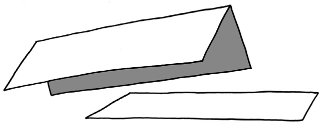
Figuur 16
1. Watter een van die twee stukke karton sal die maklikste buig?
Doen ’n ondersoek en kontroleer jou antwoord.
Een van die leerders in die paar hou die plat kartonstrook sodat dit die spasie tussen die twee boeke oorspan, soos wat hieronder gewys word. Die ander een druk afwaarts in die middel van die kartonvel.
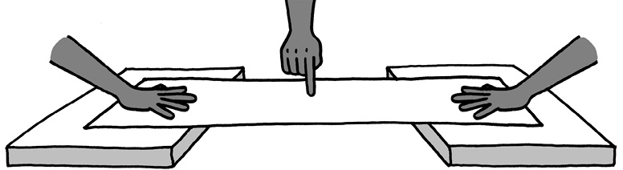Figuur 17
Doen dieselfde met die gevoude kartonstrook.
 Figuur 18
Figuur 18
2. Watter een van die twee kartonstroke buig die maklikste: die plat strook of die strook met die vou?

Aktiwiteit 3: Hoe om verskillende vorms stabiel en sterk te maak
Werk in groepe van vier.
Materiale:
- • ’n paar A4-afvalpapiervelle,
- • gom,
- • dun draad of tou en
- • ’n spyker of els om gate mee te maak.
1. Elke lid van die groep moet minstens drie papierstrooitjies rol.
2. Voeg vier papierstrooitjies saam om ’n vorm met vier sye te maak. Kyk wat gebeur as jy die kante van die vierkant indruk en uittrek. Verander die vorm?
 Figuur 19
Figuur 19
3. Voeg nog ’n papierstrooitjie by, van die linkerkantse boonste hoek tot by die regterkantse onderste hoek. Herhaal die gedruk en getrek. Verander die vorm weer maklik?
Figuur 20
Deur die vierkant in twee driehoeke te verander het jy die struktuur stabiel gemaak.
|
Om driehoeke in ’n struktuur te maak word triangulasie genoem. |
4 Kyk na die vorms hieronder. Besluit as ’n groep hoe julle die vorms stabiel kan maak.
(a) Bou die twee vorms en toets julle idees. Twee van julle maak vorm A, en die ander twee maak vorm B.
(b) Druk en trek die sye van die vorms voordat julle nog papierbuise byvoeg.
(c) Toets julle vorms nadat julle nog papierbuise bygevoeg het. Is albei stabiel?

A
B
Figuur 21
5. Kopieer die twee vorms. Trek nou lyne waar jy nog papierstrooitjies sou invoeg om driehoekvorms te maak.
|
|
6. Hoeveel stutte sou jy gebruik om vorm A in driehoeke te verander?
7. Hoeveel papierstutte het jy gebruik om vorm B in driehoeke te verander?
8. Deel jou tekeninge met drie ander leerders. Kyk goed waar hulle die diagonale dele geplaas het om hul vorms stabiel te maak.

|
Gebruik triangulasie om papier sterk te maak |
1. Die tekening hieronder is van die een sy van ’n brug. Dit is nog nie voltooi nie. Voltooi die tekening om te wys hoe triangulering gebruik gaan word.
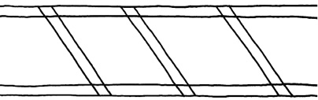
Figuur 22
2. Hieronder is tekeninge van twee verskillende raamwerke.
(a) Maak elkeen van hulle met papier of dun karton. Maak seker jy gebruik dieselfde materiaal
vir beide die raamwerke.
(b) Sodra jy klaar is, druk liggies met een hand op elkeen van hulle. Jy sal voel hulle kan ’n bietjie
druk van bo af weerstaan.
Die vierkantige raamwerk is sterk as jy reg van bo af daarop na onder druk. Dit is swak as jy van
die kant af daarop druk.
Die driehoekige raamwerk kan ook druk van die kant af weerstaan.
(c) Gebruik dieselfde materiaal wat julle vir die raamwerke gebruik het. Plak ’n stuk daarvan op
die boonste punt en onderste punt van elke raamwerk. Dit sal die raamwerk sterker maak.
(d) Toets nou die sterkte van elkeen van die raamwerke. Plaas dieselfde boek eers op die een en
dan op die ander raamwerk. Begin met ’n taamlik ligte boek. Sit nog ’n boek by as die raamwerk
nie breek nie.
(e) Hoeveel boeke kan jy op elk van die raamwerke plaas voordat dit inmekaarsak?
(f) Watter raamwerk sak eerste inmekaar?
(g) Verduidelik waarom die ander raamwerk stewiger is.
Figuur 23
Volgende week
In die volgende hoofstuk gaan jy meer leer oor die verskillende dinge wat jy moet onthou as jy beplan om iets te bou.
In hierdie hoofstuk gaan jy leer oor “ontwerpkwessies”. Ontwerpkwessies is dinge om aan te dink wanneer goed soos ’n selfoontoring, ’n brug, ’n gebou of kragstasie ontwerp word. Ontwerpkwessies sluit in die doel van die voorwerp of struktuur wat ontwerp word, die koste daarvan en hoe mense en die omgewing daardeur beïnvloed sal word.
10.1 Hoekom lyk selfoontorings soos hulle lyk? 147
10.2 Dinge waaroor die ontwerpers van torings dink 150
10.3 Gee duidelike instruksies 151
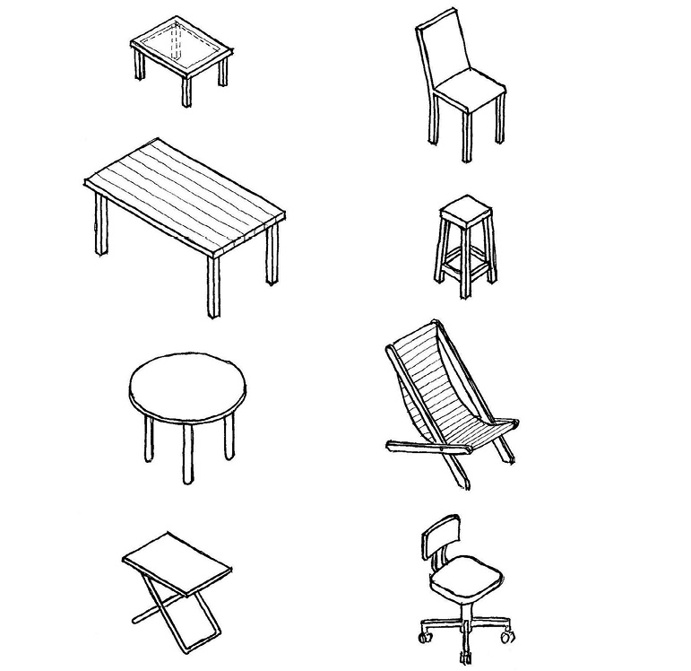Figuur 1

toring D
toring A

toring B
toring E
toring C
toring F
Figuur 2
10.1 Hoekom lyk selfoontorings soos hulle lyk?
Ondersoek ’n paar selfoontorings
Op die vorige bladsy kan jy na prente van verskeie selfoontorings kyk.
1. Hoekom dink jy is toring A ontwerp om soos ’n boom te lyk?
2. Hoekom het toring C kabels, maar nie toring D nie?
3. Hoekom sal toring A nie omtuimel nie, selfs al waai die wind sterk?
4. Hoekom het toring D ’n groot beton blok aan die onderpunt, maar staan toring E vanself, sonder enige fondament?
|
As ’n lelike voorwerp in ’n mooi omgewing staan, sê ons dit veroorsaak visuele besoedeling. As ’n voorwerp maklik omval, sê ons dit is onstabiel. Die onderste deel van ’n toring, wat die gedeelte is waarop dit staan, word die basis genoem. |
5. Watter een van die torings op die vorige bladsy se basis is die breedste? Hoekom is die toring ontwerp om so ’n breë basis te hê?
6. Watter van die torings is na jou mening meer onstabiel? Hoekom dink jy so?

Swaartepunt
Plak, soos hieronder gewys, jou potlood met kleefband aan ’n vel papier vas. Die agterkant van jou potlood moet, soos gewys word, teen die rand van die papier wees.
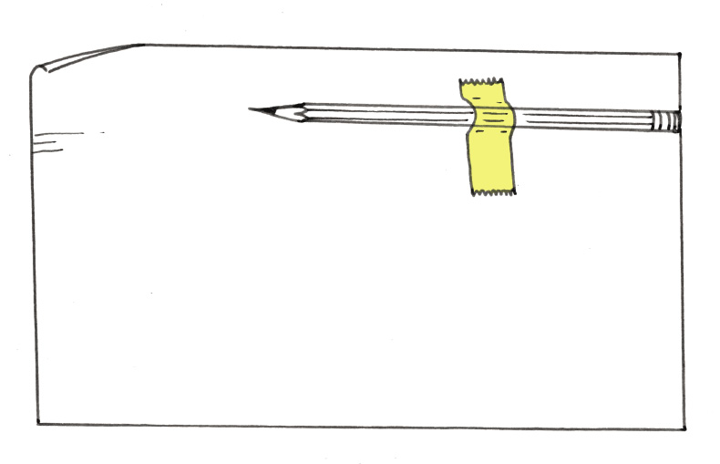Figuur 3
Rol nou die papier om die potlood om ’n lang buis met die potlood daar binne te vorm. Plak die buis aan die buitekant vas, waar die potlood se agterkant is, sodat dit nie oopmaak nie.
1. Probeer om die buis op die een punt te laat regop staan. Probeer dit met beide punte. Wat sien jy?
|
As die meeste van die gewig van ’n voorwerp in die onderste deel daarvan is, sê ingenieurs dat dit ’n lae swaartepunt het. As die meeste van die gewig van ’n voorwerp in die boonste deel daarvan is, sê ingenieurs dat dit ’n hoë swaartepunt het. |
2. Watter voorwerp is meer stabiel: een met ’n lae swaartepunt of een met ’n hoë swaartepunt?
3. Watter toring op bladsy 146 het die hoogste swaartepunt?
Figuur 4

Die volgende is verskillende maniere om te voorkom dat torings maklik omval:
|
|
4. Kyk weer na die sketse van die ses torings. Sê in elke geval watter
metode, of kombinasie van metodes, gebruik word om dit te stabiliseer.
5. Sterk fondamente voorkom dat torings omtuimel. Watter torings het fondamente onder grondvlak om te help om hulle stabiel te hou?
6. Hoe verskil die ondergrondse fondamente van mekaar?
7. Van die torings is met soliede beton of veselglas gebou. Van die ander torings is metaalstrukture. Hoekom dink jy word driehoeke in die metaalstrukture gebruik?

10.2 Dinge waaroor die ontwerpers van torings dink
Watter vrae gaan jy vra?
Veronderstel daar moet ’n nuwe selfoontoring in ’n gebied sonder selfoondekking gebou word. Die burgemeester van die plaaslike munisipaliteit in die gebied nooi jou uit om hom te besoek en sê vir jou:
“Ek het iemand nodig om ’n dokument oor die nuwe selfoontoring te skryf. Die dokument sal gegee word aan ingenieurs wat die selfoontoring sal onwerp en bou. Wanneer hulle dit lees, moet dit baie duidelik wees wat ons wil hê. Kan jy so ’n dokument skryf?”
Hy sê verder:
“Jy het inligting nodig voordat jy die dokument sal kan skryf. Om daardie inligting te kry moet jy vrae vra. Watter vrae gaan jy vra: aan my, én ’n paar ander mense in die gemeenskap?”
Skryf die vrae neer wat jy dink jou sal help om die inligting wat jy nodig het te bekom.

10.3 Gee duidelike instruksies
Skryf ’n ontwerpopdrag en spesifikasies vir skoolbanke
Veronderstel jy het die verantwoordelikheid om 100 nuwe skoolbanke vir die skool te bestel. Die banke sal by ’n meubelfabriek gemaak word. Dit is die eerste keer dat hierdie fabriek skoolbanke gaan maak. Die mense by die fabriek het geen ondervinding van die maak van skoolbanke nie, daarom moet jou instruksies aan hulle baie duidelik wees.
Jy gaan binnekort ’n dokument vir die fabrieksbestuurder skryf, sodat hy kan weet hoe die skoolbanke moet lyk, hoe groot en hoe sterk hulle moet wees, en van watter materiale hulle gemaak moet word. Voordat jy dit doen, ondersoek eers jou eie skoolbank in die klas om jou te help om oor die nuwe skoolbanke te besluit. Die nuwe skoolbanke hoef nie presies soos jou skoolbank te wees nie. Jy kan skoolbanke voorstel wat van joune verskil.
1. Ondersoek nou jou bank en dink na oor hoe jy wil hê die nuwe skoolbanke gemaak moet word. Maak aantekeninge hieronder en maak sommer ook ’n paar vryhandsketse.
|
|
’n Dokument soos die een wat jy nou gaan skryf word ’n ontwerpopdrag genoem en die antwoord op jou vrae word spesifikasies genoem.
2. Skryf die dokument wat aan die fabrieksbestuurder gestuur gaan word op ’n los papiervel. Jou dokument moet een of meer tekeninge insluit. Skryf ook die afmetings van die skoolbank neer.
3. Maak, in die spasie hieronder, ’n 3D-skuinstekening van die skoolbank wat jy gemaak wil hê.
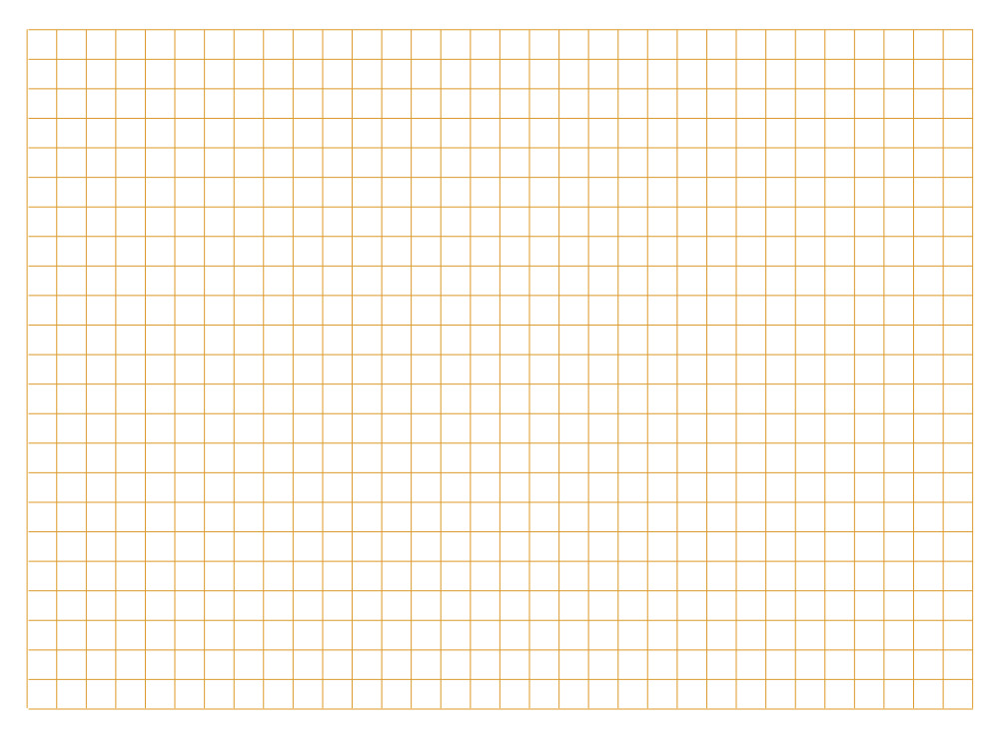
Beoordeel en verbeter jou dokument
Lees weer jou ontwerpopdrag en spesifikasies en beantwoord daarna die volgende vrae:
1. Sê jou dokument of die pote van die skoolbank van hout, metaal of plastiek gemaak moet word?
In plaas daarvan om jou eie dokument te beoordeel kan jy ’n ander leerder se dokument beoordeel. Jou onderwyser sal dit reël.
2. Sê jou dokument hoe breed die skoolbank bo-op moet wees?
3. Sê jou dokument hoe hoog bo die vloer die skoolbank se skryfoppervlak moet wees?
4. Sê jou dokument hoe grof of glad die bokant van die skoolbank se skryfoppervlak moet wees?
Probeer dink aan ander inligting wat die fabrieksbestuurder dalk nodig het, en wat nie in jou dokument verskaf word nie.
5. Herskryf jou ontwerpopdrag en spesifikasies hieronder en op die bladsy daarna. Sluit ’n artistiese enkel verdwynpunt tekening van die skoolbank op ’n afsonderlike papiervel in.
|
|
|
|
Nog ’n ontwerpopdrag en spesifikasies
Skryf in die spasie hieronder ’n ontwerpopdrag en spesifikasies vir ’n FM-radio of ’n selfoontoring neer.
|
|

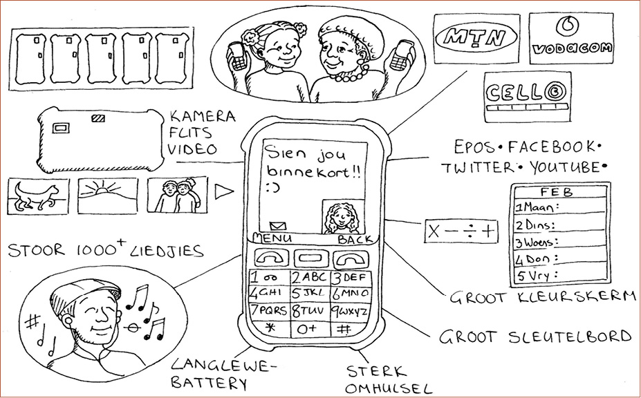

Figuur 5
Volgende week
In die komende weke gaan jy ’n model van ’n selfoontoring ontwerp en bou.
Hierdie hoofstuk is ’n formele assesseringstaak. Dit tel 70% van jou kwartaalpunt.
Oor die volgende ses en ’n half weke gaan jy ’n model van ’n selfoontoring ontwerp en bou. Om dit te doen, gaan jy deur die verskillende stadiums van die ontwerpproses werk. Van die werk sal binne ’n groep gedoen word, en van die werk sal jy op jou eie doen. Slegs die werk wat jy op jou eie doen, sal deur jou onderwyser geëvalueer word.
Week 1
Neem ’n paar besluite 160
Week 2
Vergelyk en beoordeel ontwerpe 169
Week 3
Lys jou hulpbronne en maak ’n werkstekening 173
Week 4
Bou die model 179
Week 5
Voltooi die bouery 180
Week 6
Beplan jou aanbieding 186
Beoordeling
Ondersoek:
Ontwerpopdrag, spesifikasies en beperkings [15]
Ontwerp::
Verbeter jou ontwerp [7]
Beplan om te maak [10]
Maak:
Bou jou model [22]
2D werkstekening [16]
[Puntetotaal: 70]
Ek het gedink die huis behoort ’n driehoekige dak te hê, omdat daar dan ruimte sal wees om goed te...
’n Driehoekige dak is beter, want dan is daar spasie om dinge in te bêre …
Lerato
My huis het ’n stoep voor.
Spanwerk is nie maklik nie …
Waarom?
Jessica
NEE! Dit is te ingewikkeld.
Ek het ’n beter idee.
O, dit is ’n baie goeie idee!
Hulle huise is veels te vol tierlantyntjies
Sodat daar in die somer skadu aan die sonkant van die huis sal wees en ons buite in die skadu kan sit om te eet en ander dinge te doen.
Lerato bespreek haar idee terwyl die ander luister. Wanneer sy klaar, is kom Jessica aan die beurt.
Wag, laat ek eers my idee
klaar verduidelik
Hulle teken baie beter as ek!
Solly
Figuur 1
Dis nie lank voordat hulle saam ’n pragtige huis ontwerp nie.
Solly, jy’t nog niks gesê nie. Waarom het jy ’n L-vormige huis ontwerp?
Ek hou baie van daardie idee!
Waar ek woon, waai die wind nooit so baie nie, maar ek verstaan nou die rede waarom Solly sy huis in ’n “L”-vorm ontwerp. Kom ons doen
dit ook so!
By my gesin se huis waai die wind in die huis in wanneer jy die voordeur oopmaak.
Ek het daarom ’n huis ontwerp waar die voordeur deur die “L”-vorm teen die wind beskerm sal word.
Sjoe, om in ’n span saam te werk kan pret wees – en is goed vir jou!
Figuur 2
Week 1
Neem ’n paar besluite (30 minute)
Jou dorpie staan op die punt om uiteindelik selfoon ontvangs te kry. ’n Selfoonmaatskappy beplan om ’n selfoontoring op ’n heuwel langs jou skool te bou. Wanneer die toring voltooi is, sal die mense in jou dorpie in staat wees om selfone te gebruik. Hulle sal byvoorbeeld die dokter, die kliniek of apteker kan bel as hulle siek word. Almal is baie opgewonde en hulle kan nie wag om hul familielede wat ver woon te bel nie!
Van die mense is bang dat die toring dalk lelik gaan lyk. Hulle dink dat dit nie mooi sal lyk langs die skool nie. Dit sal nie by die omgewing inpas nie. Hulle sal ’n toring verkies wat nie soos ’n toring lyk nie.
pad
stadsaal met plat dak
die heuwel aan die ander kant van die dorpie
sportveld
Figuur 3
1. Lees weer die storie bo die prent op die vorige bladsy en kyk dan na die prente van die ses verskillende selfoontorings in hoofstuk 10. Watter torings uit hierdie ses sal die mense van jou dorpie gelukkig maak?
2. Die selfoonmaatskappy stuur een van hulle werknemers na die dorpie. Hy praat met die dorpsmense om uit te vind wat die ontwerper in gedagte moet hou wanneer hy die toring beplan. Hy vra vir jou:
“Wat is die drie belangrikste dinge wat ek moet onthou wanneer ek die toring vir jou dorpie ontwerp?”
Jy kan begin deur te sê: “Die toring moet ..........................................wees.”
Jy kan ook dele van jou antwoord begin deur te sê: “Die toring moenie .................................... wees nie.”
Skryf jou antwoorde hieronder neer. Jy kan meer as drie dinge noem as jy wil.
Deur jou antwoorde op die vraag neer te skryf het jy begin om ’n ontwerpopdrag en spesifikasie vir ’n selfoontoring te skryf.
3. Kyk weer na die prent van die dorpie op die vorige bladsy. Waar dink jy moet die selfoontoring geplaas word? Besluit ook watter tipe toring dit moet wees, en maak ’n rowwe tekening van die toring op die regte plek in die prent op die vorige bladsy.

Die selfoonmaatskappy is op soek na idees vir die torings wat hulle kan bou. Hulle het jou hulp gevra. Jou taak is om ’n model van ’n selfoontoring te ontwerp en te bou.
- • Jou model moet meer as 30 cm hoog wees.
- • Dit moet ’n gelyk platform naby die bopunt van die toring hê. Op ’n werklike toring sal die tegnici bo-op hierdie platform staan wanneer hulle die senders en ontvangers by die bopunt van die toring installeer of herstel. Die platform op jou model moenie groter as 10 vierkante sentimeter wees nie.
- • Die model moet inpas by die omgewing. Dit moet op een of ander manier gekamoefleer word.
- • Die model moet met sterk materiaal gemaak word sodat die toring stabiel sal wees.
- • Dit moet ook stewig wees en sy vorm behou.
- • Jou model moet deur triangulasie versterk word.
- • Jy kan enige gepaste boumateriaal vir die struktuur gebruik, soos optelmateriaal om jou huis. Voorbeelde is stywe riete, dun, reguit stokke of handgerolde papierspykers.
Dink na oor jou taak en maak ’n rowwe skets hieronder van hoe jy dink die toring moet lyk. Maak ook notas sodat jy later sal kan onthou wat jy vandag gedink het.
|
|
Skryf ’n ontwerpopdrag (30 minute)
Lees deur die situasie en die inligting op die vorige drie bladsye voordat jy die drie stelle vrae hieronder voltooi.
Kyk weer na hoofstuk 7 om jou geheue te verfris oor die betekenisse van die terme ontwerpopdrag, spesifikasies en beperkings.
1. Skryf die ontwerpopdrag.
(a) Wat is die probleem?(1)
(b) Wie sal bly wees oor die nuwe toring?(1)
(c) Hoe sal dit hulle help?(1)
(d) Skryf nou die ontwerpopdrag. Gebruik die antwoorde van die vrae wat jy sopas beantwoord het. Begin jou paragraaf met:
Ek moet die volgende ontwerp en maak: …(2)
2. Identifiseer die spesifikasies.
(a) Hoe moet die toring ontwerp word dat dit nie lelik lyk nie?(1)
(b) Wat moet by die bopunt van die toring wees?(1)
(c) Skryf nog ’n spesifikasie in jou eie woorde neer.(1)
(d) Skryf nog ’n spesifikasie in jou eie woorde neer.(1)
(e) Skryf nog een spesifikasie in jou eie woorde neer.[1]
3. Identifiseer beperkings.
(a) Minstens hoe hoog moet jou model wees?(1)
(b) Hoeveel gewig moet jou model in staat wees om te dra?(1)
(c) Jy kan net materiale gebruik wat jy rondom die plek waar jy woon
kan vind. Wat is hierdie materiale?(3)
Totaal [15]

Beplan vir kamoeflering en sterkte (60 minute)
Daar is feitlik orals torings. Van hulle ondersteun elektriese kabels of telefoonkabels en hou watertenks van die grond af, terwyl ander, soos kerktorings, vir ons wys waarvoor ’n gebou gebruik word.
Baie mense dink dat torings lelik is. Om daardie rede word torings bedek met plante en goed wat soos plante lyk. Dit word “kamoeflering” genoem.
Kamoefleer beteken om iets te bedek of in te kleur sodat dit soos die omgewing sal lyk, en sodat dit sal inpas by die dinge rondom dit.
Figuur 4: Sommige insekte kamoefleer hulself baie goed

Figuur 5: ’n Dier wat homself goed kamoefleer
Begin dink oor die model van ’n toring wat jy gaan bou. Beantwoord die vrae hieronder en maak ook op die volgende bladsy ’n rowwe skets met aantekeninge, sodat mense die antwoorde wat jy op die vrae hieronder skryf, kan verstaan.
1. Hoe sal jy jou toring kamoefleer?
Torings word ontwerp om stabiel, sterk en stewig te wees.
|
|
2. Hoe sal jy seker maak dat jou selfoontoring stabiel is?
3. Hoe sal jy seker maak dat jou selfoontoring model sterk is?
4. Hoe sal jy seker maak dat jou selfoontoring model stewig is?
Maak jou skets hier:
|
|
Van die mense in die dorpie hou dalk nie van jou ontwerp nie. Dit sal ’n goeie idee wees om vir hulle ’n keuse te gee. Dink aan moontlikhede vir ’n ander ontwerp en maak hieronder ’n tekening met aantekeninge daarby om jou nuwe ontwerp te wys. Die nuwe ontwerp moet heeltemal van die eerste ontwerp verskil.
|
|

Week 2
Vergelyk en beoordeel ontwerpe (30 minute)
Sluit aan by twee of drie ander leerders (nie meer as twee of drie nie). Wys albei jou ontwerpe.
Kyk na die ontwerpe van die ander leerders en vra vrae oor die gedeeltes van hulle tekeninge wat jy nie verstaan nie.
Maak voorstelle aan die ander leerders oor hoe hulle hul ontwerpe kan verbeter.
Maak aantekeninge van wat die ander leerders oor jou ontwerpe sê, sodat jy dit kan onthou as jy later probeer om jou ontwerp te verbeter.
Maak ’n paar aantekeninge hieronder.
|
|

Verbeter jou ontwerp (30 minute)
Besluit watter een van jou twee ontwerpe die beste is.
Kyk weer na jou aantekeninge om te sien wat jou klasmaats daaroor gesê het. Dink nou aan maniere om jou ontwerp te verbeter.
Om jou te help om te sien hoe jy jou ontwerp kan verbeter, vra jouself die volgende vrae:
|
Gaan die materiale te maklik buig? Gaan die toring maklik omval? Gaan die toring sterk genoeg wees om die platform aan die bopunt te ondersteun? Gaan jy al die materiale hê wat jy nodig het om jou model te bou? |
Kan jy aan ander vrae dink wat jou sal help om jou ontwerp te verbeter?
Dink ook terug aan wat jy in hoofstukke 8, 9 en 10 geleer het oor hoe:
- • raamstrukture verstewig kan word om hulle sterker te maak en te keer dat hulle buig,
- • hoe raamstrukture verhoed word om te tuimel,
- • die belangrike eienskappe wat jy geïdentifiseer het toe jy torings ondersoek het, en
- • die behoefte om visuele besoedeling te vermy.
Maak ’n lys van jou beplande verbeteringe hieronder. Jy kan ook ’n skets teken.
|
|

Leer om sterk voeë te maak (60 minute)
Wanneer ’n struktuur nie die kragte wat daarop inwerk kan weerstaan nie, en dan nie meer sy doel sal kan verrig nie, dan sê mens die struktuur faal of swig. Daar is drie hoofredes vir struktuurswigting:
- • Wanneer die ontwerp sleg is. As jy ’n emmer maak van té dun pastiek, kan die plastiek kraak vanwee die gewig van die water daarin. Die water sal dan deur die kraak uitloop, dus die emmer sal nie meer sy doel verrig om die water binne te hou nie.
- • Wanneer die verkeerde materiale gebruik word. ’n Huis wat van strooi gemaak is, sal maklik kan wegwaai. ’n Huis wat gemaak is met stene van klei gemeng of van sementstene of klip, sal nie wegwaai nie.
- • Wanneer die vakmanskap gebrekkig is. As die handvatsel van die pan waarin jy jou kos braai nie goed vasgesit is nie, sal dit afbreek. Swak vakmanskap kan maak dat jy jou hand verbrand.
Jy gaan nou leer hoe om sterk voeë te maak om jou te help om jou selfoontoring model te bou.
Werk in groepe van drie.
Julle het nodig:
- • handgerolde papierstrooitjies,
- • gom (julle kan julle eie gom maak –
gebruik die resep hier regs), - • draad,
- • ’n dun stuk karton,
- • kleefband of maskeerband, en
- • ’n spyker of ’n els.
Tuisgemaakte gom
Bestanddele
1 koppie koekmeel
½ koppie suiker
1 ½ koppies water
1 eetlepel asyn
Metode
Meng die meel en suiker in ’n pot.
Voeg die helfte van die water by en roer.
Voeg die res van die water by en roer.
Voeg die asyn by.
Verhit dit totdat die mengsel dik en blinkerig word. Laat dit afkoel.
Kyk na die sketse op die volgende bladsy.
- • Leerder 1 maak voeë A, B en E.
- • Leerder 2 verbind die strooitjies, soos in C
en D gewys. - • Leerder 3 verbind drie strooitjies met ’n
karton hoekplaat van papier, soos in F gewys word.
Laat rus die voeë oornag, of langer, totdat alles droog is.
Jy sal weer na hierdie voeë terugkeer.
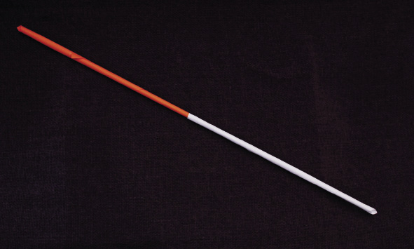
Werk versigtig met warm goed soos ’n stoof en oop vlamme.
Gebruik ’n dik lap om te keer dat jy jou hand brand.
As jy ’n brandwond opdoen, hou dit vir 20 minute in koue water. Moenie enigiets in die brandplek invryf nie.
A. Las twee strooitjies aan mekaar deur die een in die ander te druk

B. Las twee strooitjies deur dit met gom vas te plak

C. Gebruik draad om die voeg te maak

D. Gebruik van ’n karton hoekplaat om ’n voeg te versterk
Veilige gebruik van gereedskap
Gebruik gereedskap vir die doel waarvoor elke stuk gemaak is. ’n Skêr word gebruik om mee te knip – vir niks anders nie.
Dit is ook belangrik om gereedskap reg te gebruik. As jy nog nooit ’n gereedskapstuk gebruik het nie, vra iemand wat weet, hoe om dit te hanteer. Hou gereedskap in goeie werkende toestand en pak dit weg nadat jy dit gebruik het.
E. Die maak en gebruik van ’n driehoekige karton hoekplaat om ’n voeg te versterk

F. Die maak, sny en vasplak van driedimensionele voeë met karton
Figuur 6

Week 3
Lys jou hulpbronne en maak ’n werkstekening (30 minute)
Werk op jou eie.
1. Jy het reeds ’n ontwerp gemaak vir ’n selfoontoring. Kyk weer daarna. Maak ’n lys van alles wat jy nodig het om die model te bou.
Die gereedskap en materiaal wat nodig is om iets te bou word hulpbronne genoem.
2. Maak ’n werkstekening van jou model op die volgende bladsy. Jou tekening moet wys hoe die model van een kant af sal lyk. Gebruik ’n liniaal en wys afmetings. Die tekening moet die helfte so groot wees as wat die model sal wees. Voorsien jou tekening van byskrifte om die verskillende onderdele te wys. Wys waarvan die onderdele en die voeë gemaak is.
Maak jou werkstekening hier.
|
|

Vorm ’n span en kies ’n ontwerp (30 minute)
Werk in ’n groep van drie. Besluit watter rol elke lid van die groep moet speel. Bespreek elkeen van julle ontwerpe. Besluit watter ontwerp julle dink die beste is.
- • Julle moet ’n ontwerp kies wat die groep kan maak. Kies die beste ontwerp of maak ’n nuwe ontwerp wat idees van elke lid van die groep gebruik.
- • Dit is belangrik om ’n goeie tekening van die ontwerp te maak.
- • Elkeen moet presies verstaan wat dit is wat die groep gaan maak voordat julle na die volgende stap kan aangaan.
- • Onthou dat julle ontwerp ’n platform moet insluit waarop die werkers kan staan as hulle aan die bopunt van die toring moet werk.
- • Een van die groepslede moet ’n skets van die nuwe idee op ’n skoon papiervel maak. Dit kan ’n rowwe skets wees. Dit moet wys watter materiale gebruik gaan word, en hoe die voeë sterk gemaak gaan word.
- • Maak jou eie tekeninge van party van die voeë in die spasie hieronder. Maak ook ’n kopie van die tekening van die hele toring op die volgende bladsy.
|
|
Maak die tekening hier:
|
|

Beplanning vir die maakproses (30 minute)
Voordat die praktiese werk begin, gebeur ’n hele klomp dinkwerk, beplanning en voorbereiding. Ons noem hierdie dinkwerk en bymekaarmaak van gereedskap en materiale voordat ons begin die beplanning vir die maakproses.
Teen hierdie tyd het jy besluit hoe jou model gaan lyk. Nou het die tyd aangebreek om te begin beplan hoe jy dit gaan bou.
Werk nou op jou eie. Hierdie werk gaan deur jou onderwyser beoordeel word.
1. Maak ’n lys van al die materiale wat jy beplan om vir die bou van jou model te gebruik. (2)
2 Maak ’n lys van al die gereedskapstukke wat jy vir die bou van jou model gaan gebruik. Onthou, selfs ’n spyker waarmee jy gate maak, kan ’n gereedskapstuk genoem word. (2)
3 Onthou om veilig met gereedskap te werk. Party gereedskapstukke kan gevaarlik wees as hulle nie reg gebruik word nie. Skryf ’n veiligheidsreël neer vir een van die gereedskapstukke wat jy gaan gebruik. (2)
4 Dink aan die volgorde van werk. Dit is die lys van al die stappe wat jy volg as jy die model maak. Hieronder is die eerste stap. Voeg nog stappe by. (4)
Stap 1. Rol strooitjies van afvalpapier.
Stap 2.
Stap 3.
Totaal [10]

Week 4
Bou die model
Dit is belangrik dat julle die model voltooi in die tyd wat aan hierdie taak toegestaan is. Maak seker dat julle presies verstaan hoeveel tyd julle vir elke stap het.
As julle nie betyds klaarkry nie, moet julle ophou sodra die tyd verstreke is, en met die volgende take begin – selfs al is julle model nog nie klaar nie.
Onthou om veilig en netjies te werk.
Onthou om vir elke lid van die groep, ’n taak of onderdeel van die model te gee om te bou. Julle kan mekaar help, of twee leerders kan saam werk. Elkeen moet ewe hard werk aan die bou van die model.
Pak julle model en onderdele aan die einde van elke les weg.
Hou die stukke bymekaar in ’n plastieksak of papiersak. Skryf julle name op die sak wat julle gebruik. Dit sal verhoed dat julle model se onderdele met dié van iemand anders deurmekaar raak.
Soms werk ’n ontwerp nie uit nie. Julle kan dinge by julle model voeg of daaraan verander sodat dit sal werk.
Moenie tyd mors nie. Dit neem dikwels langer om ’n voorwerp te maak as wat ’n mens dink.
Bou eers die toring sonder die platform.
Julle het hierdie periode en die volgende twee om dit te doen.
Kyk weer na die voeë wat julle vroeër gemaak het. Vra die volgende vrae:
- • Watter voeë gaan julle maak?
- • Watter voeë werk die beste?
- • Watter een is die beste vir julle model?
- • Watter materiale sal julle vir die voeë gebruik?
Besluit hoe julle toring geanker sal word.
- • Gaan julle ’n raamstruktuur vir ’n basis maak?
- • Wat gaan julle as fondament gebruik? Wat gaan julle gebruik: ’n stuk karton of polistireen?
- • Gaan die toring omtuimel of sal dit in staat wees om die gewig van twee A5-handboeke te dra?
Week 5
Voltooi die bouery (30 minute)
Julle het hierdie periode en die volgende een om julle model van die toring te voltooi.
- • Maak seker dat die toring regop staan en nie omval nie.
- • Bou die platform en heg dit aan die bo-punt van die toring model vas.
- • Toets of julle toring die massa van twee A5-handboeke kan dra.
- • Kamoefleer julle model. Moenie vergeet dat julle toring by die omgewing moet inpas nie.
Sodra julle klaar is, kyk deeglik na julle model.
Julle onderwyser sal die model evalueer. Totaal [40]
Is julle ongelukkig oor party van die toring se onderdele? Maak ’n lys van maniere om dit beter te maak. Gebruik die spasie hieronder.
|
|
Maak ’n 2D werkstekening (60 minute)
Werk op jou eie. Elke leerder moet sy of haar eie tekening maak.
Maak ’n 2D werkstekening van die vooraansig van jou toringmodel.
Jou onderwyser sal jou tekening beoordeel.
As jy vergeet het hoe om werkstekeninge te maak, gaan terug na die werk wat julle in hoofstuk 2 gedoen het om jou geheue te verfris. Jy kan ook na die werkstekening van ’n watertenkvoetstuk op bladsy 182 kyk.
Jou onderwyser sal na die volgende aspekte van jou tekening kyk om aan jou punte toe te ken. Kyk dus na die lys hieronder en maak seker dat jy alles ingesluit het.
|
Kriteria vir werkstekeninge |
Merkie |
|
Die tekening het ’n opskrif. |
|
|
Die opskrif dui aan watter aansig van die model geteken is, naamlik die vooraansig. |
|
|
Die buitelyne van die tekening is donkerder as die afmetingslyne. |
|
|
Die afmetings is net een keer neergeskryf. |
|
|
Die afmetings is in millimeter geskryf. Jy hoef nie mm te skryf nie, want ontwerpers gebruik altyd millimeters op werkstekeninge. |
|
|
Alle afmetings is in die middel van die afmetingslyne geplaas. |
|
|
Daar is netjiese pylpunte aan die einpunte van jou afmetingslyne. |
|
|
Die tekening is netjies. |
|
Totaal [20]
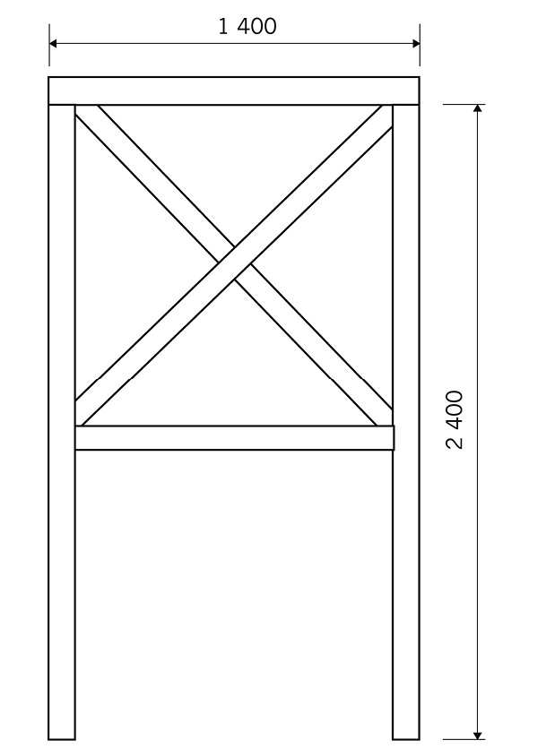
Figuur 7: Vooraansig van ’n toring vir ’n watertenk. Skaal 1:20
Maak jou eie werkstekening van jou model van die selfoontoring op hierdie bladsy.
|
|

Voorbereiding vir beoordeling (30 minute)
Volgende week gaan julle die ontwerpe van ander spanne en die torings wat hulle gebou het, beoordeel.
Om dit te doen, gaan julle ’n beoordelingsraamwerk opstel. Julle gaan die beoordelingsraamwerk gebruik om julle eie toring te beoordeel, asook die torings wat deur twee ander groepe gemaak is.
In week 1 van die mini-PAT is daar aan julle inligting gegee wat julle vir julle ontwerpspesifikasies gebruik het. Gebruik nou hierdie inligting as jou beoordelingskriteria.
Kriteria is idees wat jy gebruik om iets te beoordeel of te evalueer.
1. Verander elk van hierdie kriteria in ’n vraag wat jy gaan vra, en skryf die vraag in die beoordelingsraamwerk hieronder. Werk as ’n span.
- • Julle model moenie minder as 30 cm hoog wees nie.
- • Dit moet ’n gelyk platform naby die bopunt van die toring hê. Op ’n werklike toring sal die tegnici bo-op hierdie platform staan wanneer hulle die senders en ontvangers by die bopunt van die toring installeer of herstel. Die platform op jou model moenie groter as 10 vierkante sentimeter wees nie. Julle sal ook twee A5-handboeke gebruik om te toets of julle toring sterk genoeg is om die radiosenders en radio-ontvangers te hou.
- • Die model moet by die omgewing inpas. Dit moet op een of ander manier gekamoefleer wees.
- • Die model moet van sterk materiale gebou word om dit stabiel te maak.
- • Dit moet ook stewig wees en sy vorm behou.
- • Julle model moet verstewiging deur die gebruik van triangulasie wys.
|
Kriteria |
Goed 3 |
Medium 2 |
Swak 1 |
|
|
|
|
|
|
|
|
|
|
|
|
|
|
|
|
|
|
|
|
|
|
|
|
|
|
|
|
|
|
2. Werk op jou eie. Gebruik die beoordelingsraamwerk op die vorige bladsy om die toring wat jy en jou spanmaats gebou het te beoordeel.
3. Sluit by jou spanmaats aan en vergelyk julle beoordelings. Bespreek dit en probeer ooreenkom op die finale beoordeling.
4. Skryf jou vrae in die volgende twee tabelle vir beoordeling. Jy sal hierdie tabelle gebruik om die torings wat deur ander spanne gebou is te beoordeel.
|
KriteriaModel van span A |
Goed 3 |
Medium 2 |
Swak 1 |
|
|
|
|
|
|
|
|
|
|
|
|
|
|
|
|
|
|
|
|
|
|
|
|
|
|
|
|
|
|
|
Kriteria Model van span B |
Goed 3 |
Medium 2 |
Swak 1 |
|
|
|
|
|
|
|
|
|
|
|
|
|
|
|
|
|
|
|
|
|
|
|
|
|
|
|
|
|
|
Week 6
Beplan jou aanbieding (60 minute)
Elke span moet ’n aanbieding oor hulle planne en model vir die res van die klas voorberei. Die aanbieding moet minstens drie minute lank wees, maar nie langer as vyf minute nie.
1. Beplan jou aanbieding.
- • Al die spanlede moet praat oor die werk
wat hulle gedoen het terwyl hulle die
toring gebou het. - • Een leerder moet die ontwerpskets wys en
verduidelik. Vertel aan die groep hoe julle
beplan het om die toring by die omgewing
te laat inpas. - • Een leerder moet praat oor die probleme wat
die groep ondervind het. - • Een leerder moet praat oor hoe die groep
die toring getoets het. - • Besluit wie eerste sal praat, en wie daarna.
2. Gebruik die spasie hieronder om aantekeninge te skryf van die goed wat julle gaan doen.
Wenke vir die aanbieding
Staan regop en kyk na die klas wanneer jy praat.
Moenie jou aanbieding aflees nie.
Praat duidelik sodat almal kan hoor.
Maak seker jy weet wanneer jou beurt is.
Hou by die tydsbeperking.
|
|
3. Oefen jou aanbieding. Bied dan jou aanbieding tydens die laaste periode van die week aan.

Geniet jou wintervakansie! Na die vakansie gaan jy dinge maak wat met elektrisiteit en magnete werk.